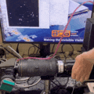

Timepix Detector#
Timepix detector uses a scintilator to detect neutrons. A scintilator is attached to a \(45 \degree\) tilted mirror.
Parameters#
Here is the list of parameters that may affect later computational processes.
Aperture of each lenses
Gain of the image intensifier
Photon-to-neutron parameters
Minimum number of photons to reconstruct neutrons with
Time window of clustering photons
Spatial clustering range of photons
Profile of the scintilator
Marker in the scintilator if exist
Example Experiment set-up with Timepix Detector (June. 2024 @ JParc, SENJU)#
Overview of the detector, sample set-up#

Preparation#
Mount detector components on a board.

EXCEPT FOR THE IMAGE INTENSIFIER, connect powers/communication cables.

Block leaking lights
Make sure there is no leaking light using real-time time-pix monitor.
You can use
SoPhyto monitor the image taken by the timepix in real-time.
SoPhyis written by Amsterdam Scientific Instrument but I couldn’t find the documentation online.This time, wrapping aluminium tape was enough.

Focusing
Focusing should be done in an order from the time-pix body to the scintilator mount.
All the apertures should be fully-open at the beginning since it is easier to see the effect of focusing when they are wider.
Each group of signals should shrink like the picture above as focusing is optimized.

You can also use a complicated pattern like
Siemens Starto adjust the focus.Once focusing is done, gently fix the lenses with i.e. aluminium tape.
Optimizing image intensifier
We need to find the intensity saturating points of the image intensifier.
Use
Zabierto control the gain of theimage intensifier.After making sure that the lens is not exposed to the direct light, plug the power to the
image intensifier.Good starting gain is
0.6and repeat a measurement until you find the saturating point.Pairwise comparison plot example with fake-data.
In the example above, since the pair-wise comparison becomes flat at \(0.7 V\), we can optimize the intensifier gain around that voltage.
Attach scintilator
Carefully attach the scintilator to the direct lens, that will be facing the beam.
Scintilator may move while changing surroundings, i.e. sample, or drift during the measurement for some reason. It can affect the background normalization since scintilator doesn’t have a constant spatial efficiency. Secure the scintilator as much as possible once it is mounted as you want.
Align with the beam
Align the center of the lens and scintilator to beam.

There should be enough space for a sample and a shield (if applicable).
{kind=link}
{kind=link}
Open beam measurement (Background)#
Open beam is measured without any samples for background normalization/substration.
Iron sample measurement (Reference)#
Iron sample is measured for bragg edge fitting of the other samples.
Siemens Star (Spatial Resolution)#
Siemens start is used for measuring spatial resolution.
Sample Measurement (Signal)#
This time, a battery sample was measured while charging/resting/decharging.
Trouble Shooting#
Scintilator The scintilator angle is not important as long as it stays the same position throughout the background/signal measurement. However, it limited the space to mount a sample rotation station in this experiment. The sample couldn’t get close enough to the scintilator. Therefore we had to use a tilted holder to mount the sample rotating station.
Detector Component Displacement The scintilator was accidentally displaced while mounting the sample. Therefore the background image had to be aligned first. See Image Alignment for more detail.